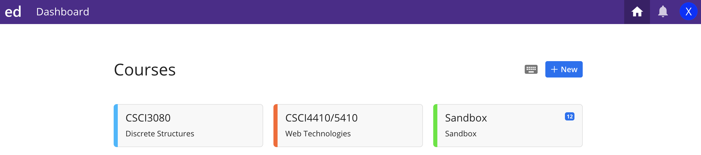

OLA 0: Join in the CSCI4410/5410 class in edStem
Ed Stem is an online IDE (integrated development environment) that can be used with a variety of programming languages, including HTML/CSS, JavaScript, Python, C++, and so on.We're using Ed Stem as the programming platform for CSCI-4410/5410 this semester. You need to edit and submit your project in Ed Stem.
Steps:
Step 1:
Please click the following invitation link to Join the CSCI-4410/5410 Class in Ed Stem:Step 2:
After you click the above invitation link, You should see the following page:Please Create an Ed Stem account with your full name and MTSU email
Step 3:
In your Ed Stem dashboard, you should see our class: CSCI4410/5410 Web Technologies
Congratulations! You have finished OLA0!